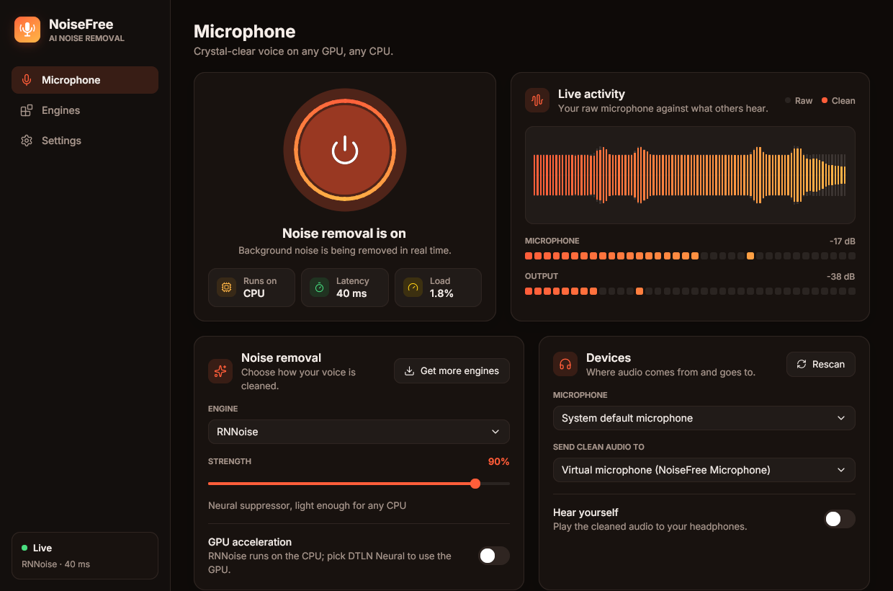

Your voice in. Only your voice out.
NoiseFree sits between your real microphone and every app that listens to it.
Your microphone
Any input device, or the system default.
A noise engine
RNNoise, NoiseFree Lite, DeepFilterNet, DTLN or your own plugin.
Voice extras
Optional enhancements after noise removal, such as a rumble filter below 80 Hz.
NoiseFree Microphone
Pick it in Discord, Zoom, Teams, OBS or your browser.
Built for every computer,
not just the one with the big GPU.
Swappable engines
Two engines are built in and work offline. Install more from the Engines page, add any LADSPA voice plugin, or describe a new engine in a JSON manifest.
GPU optional
Neural engines can run on DirectML (any DirectX 12 GPU), Core ML (Apple silicon) or CUDA (NVIDIA on Linux). Without one they fall back to the CPU and tell you why.
Hear the difference
Record up to 10 seconds, play it back, and switch between the cleaned and the original take while it plays.
Your speakers stay yours
Virtual cable drivers like to make themselves the default output, which silences the computer. NoiseFree notices within seconds and switches your real devices back (Windows and Linux).
Light on resources
The suppressor runs on the audio thread with no allocations and no extra threads. In the repo's tests RNNoise uses about 1–2% of one core, NoiseFree Lite about 0.4%.
Stays on your computer
Audio is processed locally and never leaves your machine. The UI redraws only while its live meters are on screen.
Warm, calm and out of your way.

The Microphone page: one switch, live meters for your raw and cleaned voice, engine and device choices.
Pick the cleaner that fits your machine.
From a pure-Go filter for old laptops to neural networks that can move to your GPU.
| Engine | Tech | Quality | CPU | GPU | Platforms |
|---|---|---|---|---|---|
| NoiseFree Lite Built in | Pure-Go Wiener filter | – | all | ||
| RNNoise Built in | Xiph RNN, compiled in | – | all | ||
| RNNoise Voice Gate | LADSPA (werman) | – | Windows, macOS, Linux | ||
| DeepFilterNet 3 | LADSPA | – | Windows x64, Linux x64/arm64 | ||
| DTLN Neural | ONNX Runtime | GPU | Windows x64, macOS arm64, Linux x64/arm64 |
Bring your own: Engines → Add engine runs any LADSPA plugin's first mono effect at 48 kHz, or installs an engine from a JSON manifest.
Get NoiseFree.
Packages are attached to every GitHub release. The virtual microphone works a little differently on each system:
Windows
NoiseFree plays into the free VB-Audio Virtual Cable; pick CABLE Output as your microphone. Neural engines can use any DirectX 12 GPU.
Download for WindowsmacOS
NoiseFree plays into the free BlackHole 2ch; pick BlackHole 2ch as your microphone. Core ML runs neural engines on Apple silicon.
Download for macOSLinux
NoiseFree creates NoiseFree Microphone itself through PulseAudio or PipeWire and removes it on exit. Nothing else to install.
Download for LinuxQuiet the room. Keep the voice.
Free and open source under the Apache License 2.0. Read the code, build it yourself with giode build, or add your own engine.
Privacy policy.
NoiseFree has no accounts, no analytics, no ads and no tracking, and it sends nothing to its developer. This policy covers the app from every source: the GitHub releases, the Microsoft Store and the Mac App Store. Last updated November 19, 2026.
Your microphone
NoiseFree reads your microphone only while noise removal or Preview is on, to clean your voice. The audio is processed in memory on your computer and goes only to the output you choose: the virtual microphone (VB-Cable, BlackHole or NoiseFree Microphone) or your own speakers for monitoring. It is never recorded to disk, uploaded or analysed for anything else.
A Preview take (up to 10 seconds) stays in memory and is gone when you record another one or quit.
What stays on your computer
Your settings (on/off, engine, strength, chosen devices and their names, theme and window options) are saved in a settings.json file in NoiseFree's folder, along with engines you install and manifests you add. Settings → Engines and settings opens it. Uninstalling NoiseFree and deleting that folder removes everything.
When NoiseFree uses the internet
Only when you ask it to. Installing an engine from the Engines page downloads its files from where its card says they come from:
- GitHub (
github.com,raw.githubusercontent.com) for DeepFilterNet, RNNoise Voice Gate, DTLN and ONNX Runtime; - NuGet (
api.nuget.org) for the Windows GPU acceleration pack; - the address you type or that a manifest you add names.
Like any download, these requests reveal your IP address to that server, under its own privacy policy. Nothing about you or your audio is sent. Links such as the VB-Cable or BlackHole download page open in your browser.
Nothing collected
NoiseFree does not collect, store or share personal data, does not use cookies or identifiers, and contains no third-party SDKs that do. The Mac App Store version has only the built-in engines and never goes online. In App Store terms: Data Not Collected; in Microsoft Store terms: no personal information is collected or transmitted.
This website is a static page on GitHub Pages; it sets no cookies and runs no analytics. GitHub may log visits as described in its own privacy statement.
Children, changes and contact
NoiseFree is suitable for all ages and collects nothing from anyone, children included. If this policy changes, the new version appears here with a new date. Questions? Open an issue at github.com/xmhrnx/noisefree/issues.